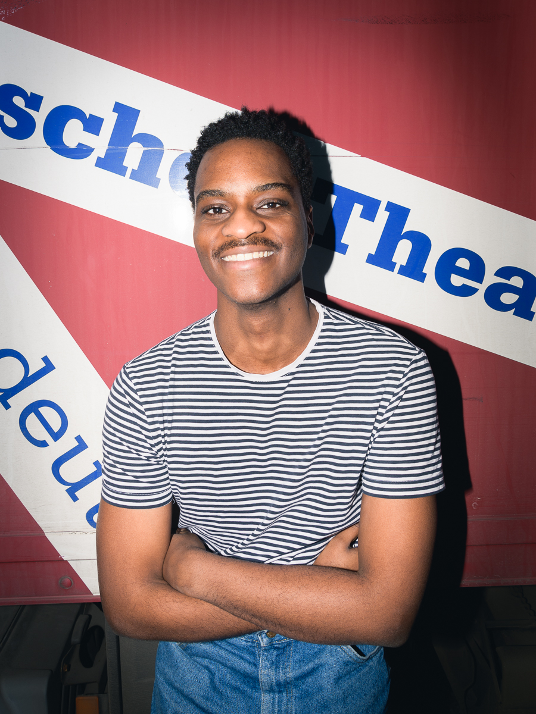

Serge Mateso
Ensemble
Serge Mateso ist Teil des Ensembles von Jugend ohne Gott. Mit seiner starken Bühnenpräsenz und seinem authentischen Spiel verleiht er seiner Rolle Tiefe und Ausdruck.
Biografie
Serge Mateso ist Schauspieler und Performer. In Jugend ohne Gott überzeugt er durch seine intensive Darstellung und seine Fähigkeit, Emotionen glaubhaft auf die Bühne zu bringen.
Zitat
„Theater ist für mich ein Raum, in dem ich neue Seiten an mir entdecken kann.“